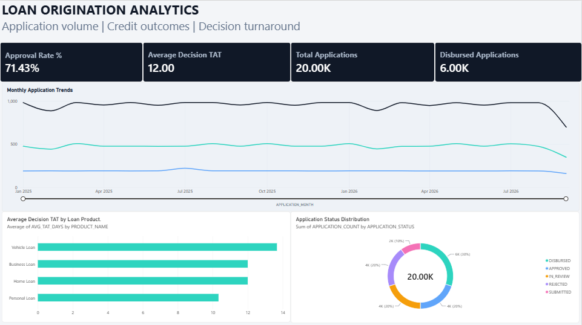

SQL · Oracle · Power BI
Loan Origination & Credit Performance Analytics

A portfolio project using synthetic loan application data to explore application outcomes, decision turnaround time and monthly lending trends. The analysis is designed to demonstrate practical reporting and analytics skills in a loan origination context.
20,000synthetic applications
4loan product categories
Oracle SQLviews and KPI queries
Power BIdashboard
Business questions explored
- How are applications distributed across current statuses?
- How does decision turnaround time vary by loan product?
- How do application and decision volumes change month to month?
Data is synthetic and created for demonstration purposes; it does not represent real customers or actual lending performance.
Project status: Dashboard and SQL analysis developed. Further documentation and portfolio evidence will be added.